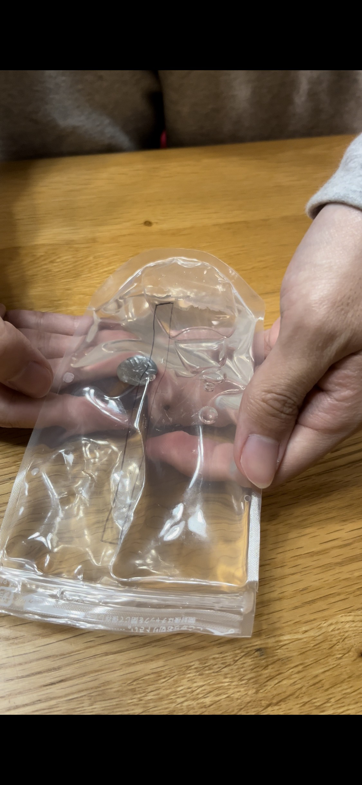
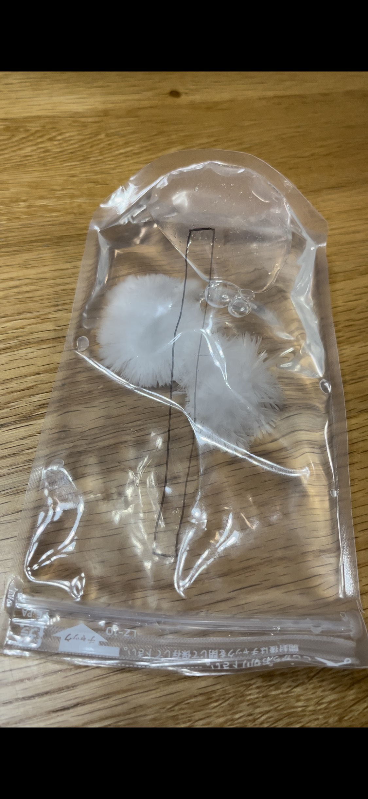

プロジェクト進捗14
光の見えるアイマスクについて12

窓を小さく作ったおかげで説明書通りの分量の80gの酢酸ナトリウムを入れることができた。袋の重量6gを加えて86gとなった。

水も説明書通りにきっちりと20cc測って入れた。前回の反省を踏まえて特に水の分量には敏感になって測った。

そして今回も前回と同様に家の外でポータブルコンロを使って湯煎していたのだが、前回よりも冬が進んでいたことでポータブルコンロの火力よりも外の寒さが打ち勝って、お湯が沸騰せず、酢酸ナトリウムが溶けないという問題が発生した。そこでもっと火力が出せるBBQ用のコンロを出してもらい、これで湯煎を進めた。

これでも沸騰はしなかったものの、酢酸ナトリウムの融点である58℃以上の温度まで温めることができたので酢酸ナトリウム水溶液が完成した。

そして完成した水溶液がこちら。見た目の変化は前回とあまり変わらないように見える。もう少し冷ましたら袋に予め入れておいた金具を落として結晶化させる。

うっかり刺激を与えてしまい、冷めきる前に結晶化させてしまったのでもう一度湯煎して液体に戻す。（絵面が変わらないのでもう一度湯煎したあとの画像はない）

今度は刺激を与えないように慎重に冷却した。予め入れておいた金具を裏返すことでパチッという音がして酢酸ナトリウム水溶液に刺激を加える。

刺激を与えたことでそこから連鎖するように結晶化が始まった。それと共に暖かくなって、カイロとしての機能を持ち始めた。

以前、先に作成しておいたアイマスクカバーの中に入れることができた。しかし、窓の半分の接着剤が剝がれてしまったので片目分の窓しか残らなかった。半分は見えるはずなのでこのまま実験を進める。（酢酸ナトリウムもなくなってしまったのでこれ以上の実験ができないこともある）ようやく完成したパッチンカイロをアイマスクとして実際に使ってみるのは次回の進捗発表にて。